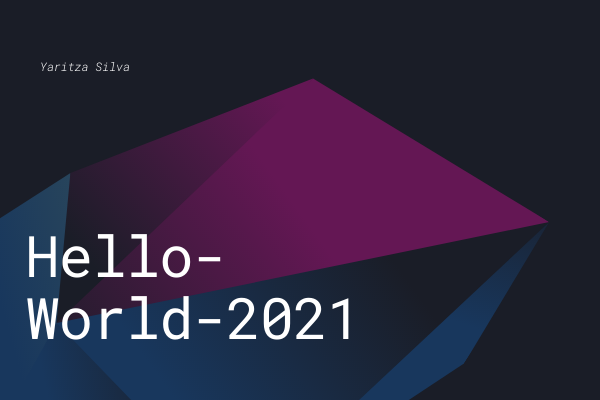
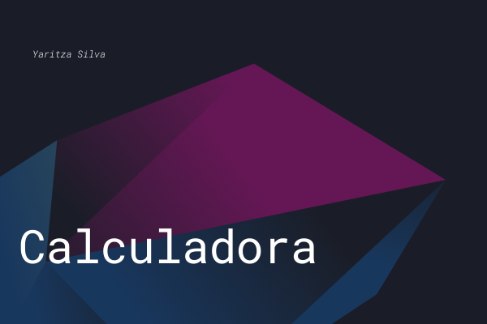
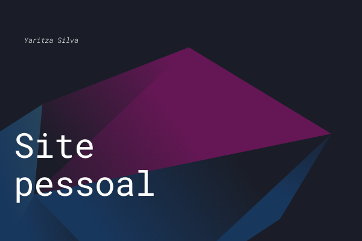
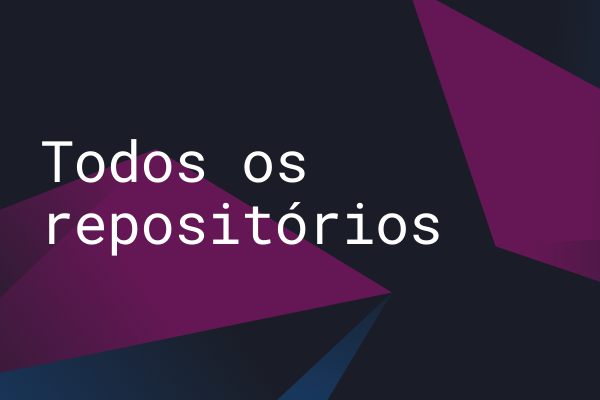

Yaritza Silva
Estudante de Informática e Administração
PORTFOLIO DE INFORMATICA
Conheça alguns dos meus repositórios do curso de Informática

Meu primeiro repositório C#
Este foi o primeiro repositório realizado por mim, durante as aulas sobre C#.

Meu último repositório em C#
Este foi o último repositório realizado por mim, durante as aulas sobre C#, sendo uma calculadora bem bacaninha.

Meu último repositório HTML/CSS
Este é o repositório mais recente que tenho, contendo algumas informações pessoais.

Todos os meus repositórios
Todos os meus repositórios, de todas as linguagens praticadas por mim até o presente momento.
PORTFOLIO DE ADMINISTRAÇÃO
Visualize alguns dos trabalhos e projetos que realizei durante o curso de Administração